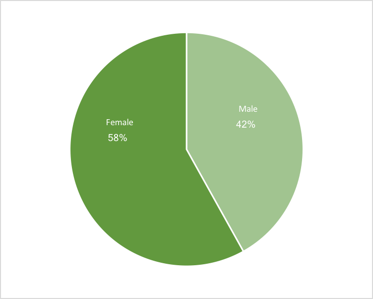

Most are women.
The vast majority are private employees.

I may live a block from most of my classes, but I regularly take regional rail to Center City Philadelphia for my internship. Since I don't have a car, and am terrified of riding a bike on city streets, it's one of my best (and only) options. So I got to thinking - who else gets to work using public transit in Philadelphia? What might we have in common?
As it turns out, about 31% of Philadelphia's residents commute using public transit, be it by bus, train, or trolley. Many more commute into Philadelphia from the surrounding area - these statistics are representative of only those who live within the city. Understanding who uses public transit is key to building a better system. So what can we learn about public transit commuters from Census data?
From looking at the vast amount data that comes from the census, it's clear that in many ways the commuting world is diverse. There's a lot more investigating to be done here, and through thorough investigation it's possible to use our knowledge about who does use public transit to draw in more users.
The primary reason that I'm interested in public transit is that cars, from an environmental standpoint, are utterly destructive. The fewer people driving, the better. While it's encouraging, in my opinion, to see such a large group of the commuting population relying on public transportation, even more are still driving alone. By creating an attractive system, we can push commuters to change their behavior for the overall benefit of all - because everyone benefits from cleaner air and safer driving conditions.